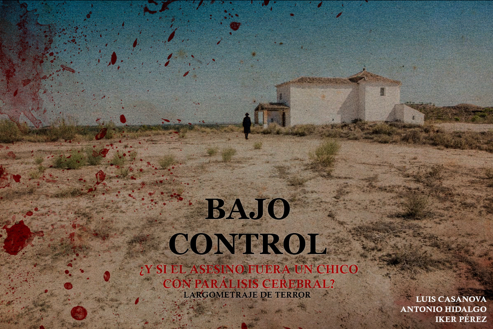

Análisis de Guion
Evaluación de la estructura, arcos de personajes y viabilidad comercial del proyecto. Ofrezco informes de lectura rápidos (2-3 páginas), notas de desarrollo (10 páginas) y análisis completos de guion (15 páginas).
¡Hola! Mi nombre es Antonio Hidalgo y soy guionista, historiador y productor. Mi formación me permite entender lo que hace única a las historias sin olvidar nunca el pasado sobre el que se asientan. Ofrezco servicios de consultoría y desarrollo al mismo tiempo que impulso mis propias obras a través de mi sello, Gela Producciones.
Historiador y guionista con una sólida trayectoria académica y de investigación, que incluye un expediente sobresaliente por la Universidad de Granada, múltiples títulos de posgrado y becas de excelencia. Tras consolidar su perfil internacional con estancias en entornos clave como Los Ángeles, reorientó su carrera hacia la creación audiovisual cursando el Máster de Guion en la Universidad Rey Juan Carlos. Cuenta con experiencia en el desarrollo de largometrajes, series y piezas cortas galardonadas, y actualmente compagina la creación de sus propios proyectos con su labor como asesor histórico y ayudante de guion para productoras de primer nivel como Smiz & Pixel y Ganga Producciones.

Ofrezco servicios especializados para productoras y creadores que necesitan un apoyo para el desarrollo de sus proyectos, ya sea para conseguir rigor histórico, mejoras de guion o ayuda en la producción.
Evaluación de la estructura, arcos de personajes y viabilidad comercial del proyecto. Ofrezco informes de lectura rápidos (2-3 páginas), notas de desarrollo (10 páginas) y análisis completos de guion (15 páginas).
Ofrezco dos modelos: por un lado, un dossier visual enfocado en la industria. Y un dossier de investigación para que el equipo de desarrollo pueda asegurar el rigor histórico de lo que están creando.
Los presupuestos se hacen a medida según el proyecto. Visita la sección de Contacto para que podamos hablar!
Gela Producciones es una iniciativa dedicada a la creación de cortometrajes y largometrajes cinematográficos. Impulsada por tres compañeros graduados en Historia con una profunda pasión por el arte audiovisual, este proyecto busca aunar todos los esfuerzos para crear contenido original con un fuerte impacto futuro en el mundo del cine.

Proyecto de cortometraje actualmente en postproducción.


Drama social. Proyecto en fase de desarrollo en busca de productora.


Terror. El asesino es un niño paralítico con poderes telepáticos. Proyecto en busca de productora.

Proyecto de largometraje histórico. En fase de desarrollo y búsqueda de productora.

Selección de mis últimos relatos donde me adentro en el mundo de la literatura:
Teléfono: +34 692 859 356
Email: alhidalgovicente@gmail.com
LinkedIn: Visitar mi perfil
Instagram: @antonico_26
X (Twitter): @Antonico_26